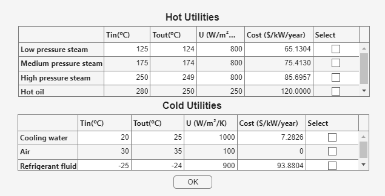
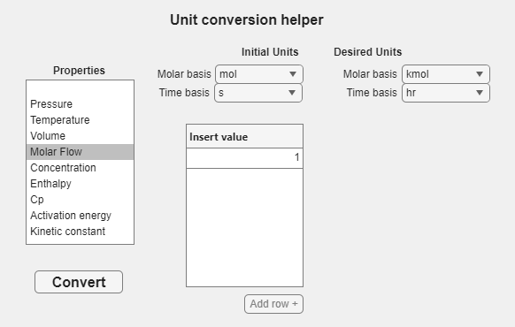

Use the utility tables for heat-transfer cases and the converter whenever source data use different displayed units.
Before You Start
Identify whether the process needs heating or cooling and note the source and desired units for every value you intend to convert.
Heating and Cooling Utilities
The utilities button in the Reactor window opens hot and cold utility tables. Select the required row and press OK to use its temperatures, heat-transfer coefficient, and cost in a heat-transfer case.

The Utilities window presents the available heating and cooling choices in two tables.
Open Utilities from the Reactor window.
Select one Hot Utilities or Cold Utilities row.
Press OK and review the returned reactor fields.
Unit Conversion
Unit conversion helper is available from the data-entry windows. Select a property, choose the initial and desired units, enter one or more values, and press Convert.

The converter changes displayed engineering units without requiring a separate calculation outside the app.
Select the property.
Choose Initial Units and Desired Units, including the displayed bases.
Enter values; use Add row + for additional values.
Press Convert and transfer the results to the data-entry window.
Frequent Errors
Check the basis: molar flow, concentration, and energy values may have more than one unit selector. Match every basis before copying a converted value.
Next Steps
Follow the complete CSTR example to see the initial-data windows and the main problem panel used together.